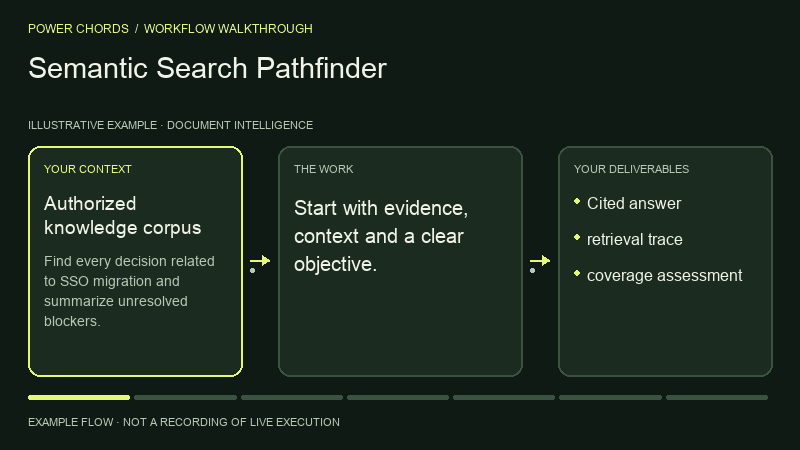

Document Intelligence · BY POWER CHORDS
Semantic Search Pathfinder
Retrieve relevant context.
Your context. A result to review.
- Published by
- Power Chords
- Use with
- Codex workspace
Run in your local Codex workspace, or use the instructions with another equipped agent. Review results before acting. - Bring it to
- Claude Code · Codex · Cursor · Gemini CLI · other agents via Markdown
- Result
- Cited answer
SEE THE PROCESS
From context to cited answer.
An illustrated example of the workflow.

THE WORK, DEFINED
Inputs and outputs
What you bring
- Authorized knowledge corpus
- question
- access policies
- freshness requirements
What to review
- Cited answer
- retrieval trace
- coverage assessment
WORKFLOW DIAGRAM
How Pathfinder works.
Fill gaps in evidence or access before continuing.
- INPUT
Authorized knowledge corpus · question · access policies · freshness requirements
- STEP 01
Interpret the information need
- STEP 02
Apply source permissions before retrieval
- STEP 03
Choose keyword or semantic strategy
- STEP 04
Rank passages by relevance and recency
- STEP 05
Synthesize with exact citations and unresolved gaps
- REVIEW
Do not answer as though missing or stale content is current
- OUTPUT
Cited answer · retrieval trace · coverage assessment
Your approval → Review the work before publishing, sending, deploying or changing external systems.
TRY IT WITH YOUR CONTEXT
One prompt. Your agent.
Add your task and inputs. Your agent needs these instructions and the right tools.
Use Power Chords Semantic Search Pathfinder. Find every decision related to SSO migration and summarize unresolved blockers. Return Cited answer, retrieval trace, coverage assessment. Show supporting evidence, assumptions, validation and next actions. Ask for my approval before any external write or publication.
FINISH WITH CONFIDENCE
What a good result needs.
- The outputs match your brief.
- Claims have sources. Assumptions and gaps are labelled.
- Do not answer as though missing or stale content is current.
- Tool results come from real execution.